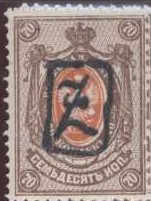
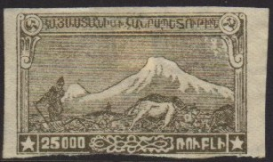

Return To Catalogue - Armenia, part 2 and miscellaneous - Russia - Transcaucasian federation
Note: on my website many of the
pictures can not be seen! They are of course present in the
catalogue;
contact me if you want to purchase the catalogue.
From 1923 onwards the stamps of the Transcaucasian federation were used.
'k 60 k' on 1 k orange
Value of the stamps |
|||
vc = very common c = common * = not so common ** = uncommon |
*** = very uncommon R = rare RR = very rare RRR = extremely rare |
||
| Value | Unused | Used | Remarks |
| 60 k on 1 k | * | * | Overprint black or violet |
Russian stamps were overprinted with a 'Z' alike symbol in black or violet to be used in the Armenian Republic in November 1919. Unoverprinted stamps were declared invalid. Many forgeries of these stamps exist. Examples:



A 15.000 on 5 R on 15 k brown and blue stamp of Armenia was issued for Georgia.

1 R green (Sowjet arms) 2 R black (ancient stone carving with dragon) 3 R red (Sowjet arms) 5 R brown (ruins of the city of Ani) 25 R green (ancient stone carving with bird) 50 R red (Red-army man) 100 R orange (ancient stone carving with lion) 250 R blue (birds with arms in center) 500 R lilac (farmer and Mount Alagheuse) 1000 R light blue (fisherman) 2000 R yellow (post office in Jerevan with Mount Ararat in background) 5000 R dark brown (ancient ruin in city of Ani) 10000 R red (people in street of Jerevan) 15000 R grey (Lake Goktcha and monastry, fish at right hand side) 20000 R red (ancient stone carving with mythical creature) 25000 R blue (ploughing farmer in front of Mount Ararat) 25000 R brown (design identical to 25000 R blue) Surcharged (1923)


'1' (red) on 1 R green '2' on 2 R black '2' on 500 R lilac '3' on 3 R red '4' (black or red) on 25 R red '5' on 50 R red '10' on 100 R orange '15' on 250 R blue '20' on 500 R lilac '35' on 20000 R red '50' on 25000 R blue 3 R on 3 R red
I've seen a forgery of the 2000 R value, in which the central building only has 2 rows of windows (just left to the gate), while the genuine stamps have 3 rows. Also, the borders below the top inscription are different. For more info see: http://www.rossica.org/Samovar/viewthread.php?tid=1640


Forgery and genuine stamp, images obtained
http://www.rossica.org/Samovar/viewthread.php?tid=1640
A forgery of the 500 R also exists, with the patch on the back of the animal at the left hand side different.
Armenia, part 2 and miscellaneous


{kind=link}